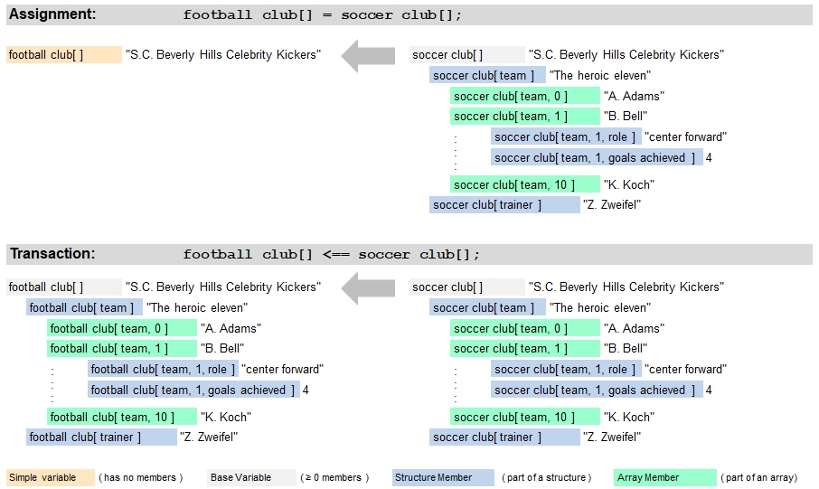

Introduction
The following sections provide an introduction of carrying out transactions without assignment operators.
In this case, destination variables or table entries are cleared first before they are overwritten. The following
illustration shows a typical copy transaction:
